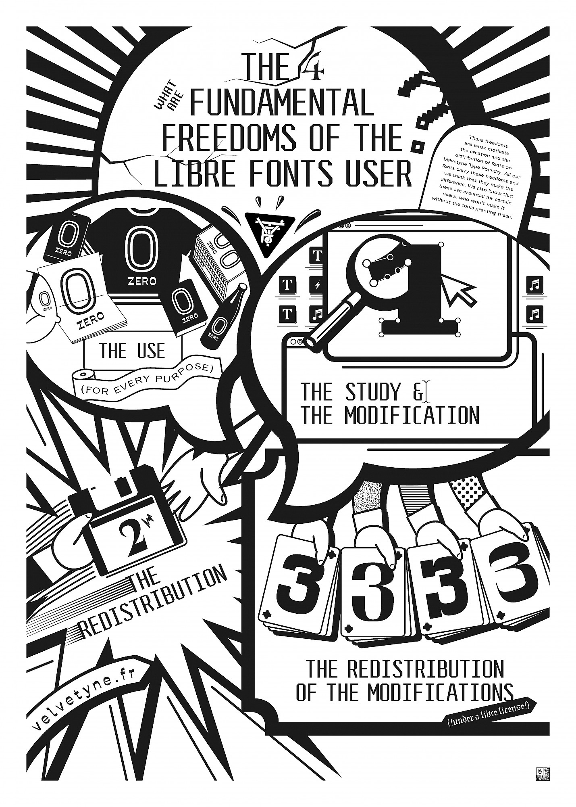

[Fig.1] Velvetyne Type Foundry et ses quatre libertés.[Fig.2] Figure 2. Open Source Publishing. La mise en page de l'édition pour théâtre la Balalsamine faite à l'aide de
HTML2PPRINT[Fig.4] L'interface de l'outil Ethertoff. Open Source Publishing[Fig.6] Les images d'Antony Masure pour montrer l'aspect absurde des logiciels propriètaires[Fig.14] Les schémas qui montre la modularité et laccessibilité des logiciels libres et des logiciels propriètaires [Fig.22] Magazine Médor